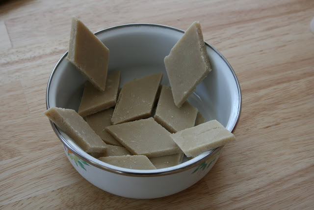

Kaju katli
Cashew cake is my Mom's recipe.Its a all time favorite for everyone.Just one bite & i feel that I'm in heaven.
Ingredients:
- Cashew - 1 cup.
- Milk - 1/4 cup.
- Sugar - 1 cup.
- Ghee - 4 spoons.
- Cardamom - a pinch.
Preparations:
- Wash cashew with water.**Dont soak in water.
- Grind it with milk.
- In a heavy bottom pan,heat the ghee & wait for 30 sec.
- Put the cashew paste & cardamom powder in it .
- Stir it continuously till it stops sticking to the spatula.
- Put that in a large pan & allow it to cool for some time.
- After, cut into small pieces of your fav shape.
- Delicious Cashew cake is ready...Enjoy..